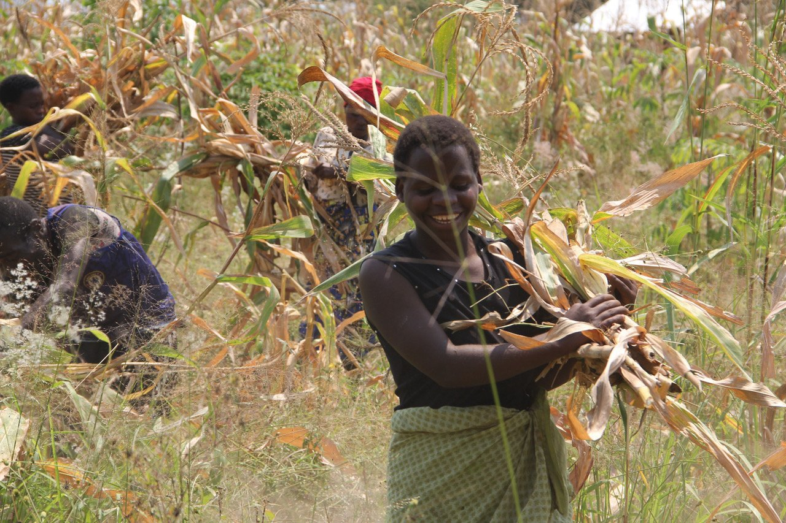

Goal One:
Batwa Farm at Matanda, Uganda
Phase one: land purchase $23,000 USD
Phase two: clearing and planting $4,000 USD
In 2022 approximately 10 acres of very fertile farm land was purchased at Matanda [near Kihihi] Uganda. Elders, families, youth and other members of four Batwa communities were asked if they wanted to participate in a new farming project. After visiting the land with Tweheyo Robert and Mushamba Moses of the Rafiki Memorial Wildlife Conservation Initiative the Batwa people supported the new farm project. In February and March of 2023 the farm project is proceeding with the clearing and plowing and preparation of the land. The first crops will be planted this spring.
It is our hope for the future that this farm project will provide a sustainable food source for the Batwa families and settlements. Additional farm land may be purchased and farmed by the Batwa families in future years.
 View All Projects
View All Projects
 View Progress
View Progress
 Make a Donation
Make a Donation